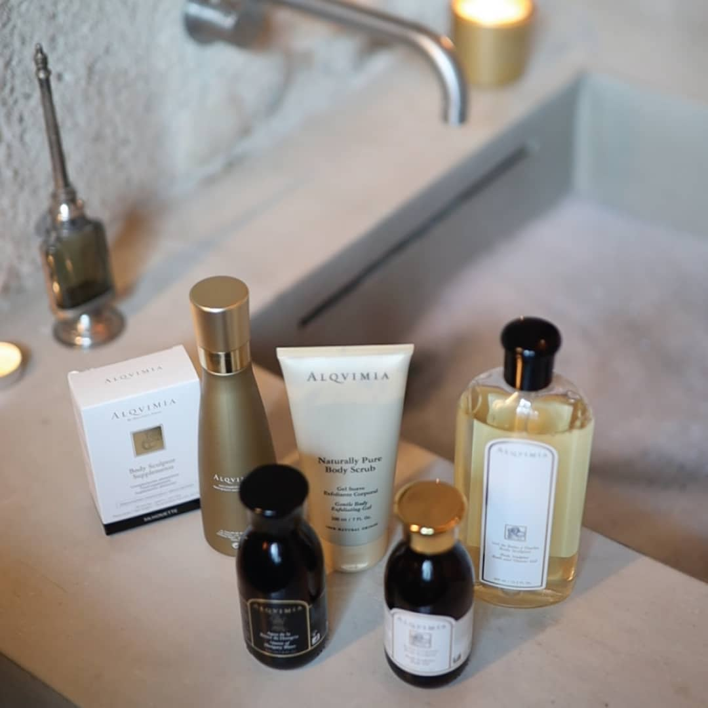

10 надежных способов борьбы с осенней хандрой
Наука на страже прекрасного настроенияBeauty-редактор ELLE.UA Лена Лисун с наступлением холодной осени едва не впала в депрессию, но взяла себя в руки и составила чек-лист для борьбы с хандрой. Здесь вы найдете полезные, а самое важное — проверенные способы, которые помогут обрести ясный ум, отличное настроение и энергию, даже если за окном непогода. Здесь вы найдете полезные, а самое важное — проверенные способы, которые помогут обрести ясный ум, отличное настроение и энергию, даже если за окном непогода.
Пейте какао
Во всех этих мемах про осень и какао есть рациональное зерно: в напитке содержатся теобромин и аминокислота триптофан, которые способны поднимать настроение за считаные минуты.
Принимайте витамин D
Он отвечает не только за иммунитет, но и за отличное настроение. Эксперты рекомендуют без сомнений включать в рацион эту добавку в профилактической дозировке до 2000 МЕ.
Витамин D можно получить в таких продуктах, как
- Печень трески
- Я пункт
-
Рыба
- Сельд
- Скумбрия
- Петрушка
Спорт
Парадоксально, но, чем больше энергии вы тратите на спорт, тем больше ее прибавляется.
Beauty-день в салоне красоты.
Быстрый способ избавиться от осенней хандры и апатии — beauty-день в салоне красоты. Можно заказать
- Уход для волос после лета
- Укладку
-
Маникюр
- с красивым покрытием
- с интересным дизайном
- Педикюр
- Массаж
Использовать масло лаванды
Миранда Керр призналась, что масло лаванды помогало ей справиться с бессонницей и депрессией после расставания с Орландо Блумом. Можете взять этот совет на вооружение, если ваша хандра связана с безумным количеством работы, а расслабиться сложно.
Какие еще масла можно использовать?
Если же вы на дзене, а энергия на нуле, используйте для ароматерапии цитрусовые масла — лимона, апельсина, бергамота и грейпфрута.
Встречайтесь с друзьями
Не отказывайтесь от встреч с друзьями, даже если погода не располагает к прогулкам. Выбирайте уютные заведения, где выдают пледы, или же устраивайте home party.